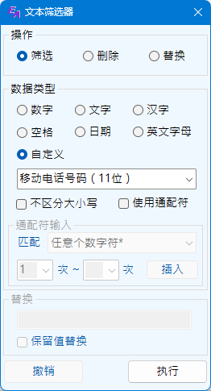
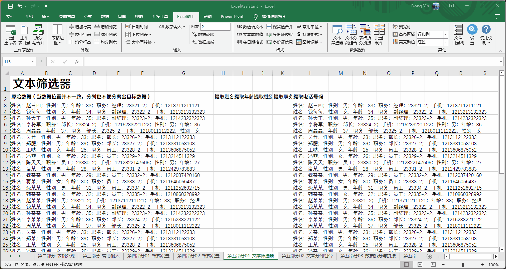

数据筛选及替换功能
Excel助手Ribbon菜单中数据操作部分点击文本筛选器按钮即可调出如下操作界面：
该功能主要对文本类型的数据单元格进行操作，可用于从外界导入的各类繁杂的信息中提取所需的内容。本功能忽略所选范围内的非文本值数据。
主要操作包括 筛选 删除 替换 三种，即将单元格文本内符合匹配规则的数据筛选或删除或进行替换，经过筛选、删除或者替换操作的新字符将替换原单元格的内容。
|  |
数据类型，即为匹配类型，主要规则如下：
|
采用自定义类型，用户可以选择预定义的8种匹配类型，也可以根据需要自定义一种数据类型。 预定义的8种匹配类型包括：
| 手机号码 | 11位，以1开始，连续的11位数字，或者以空格或-分段的号码。例如 1## #### ####，或者1##-####-####，此匹配不进行段号验证，不确定手机号的有效性 |
| 身份证号码 | 18位，连续的数字，末尾为数字或者X、x |
| 座机号码不带分机 | 以0开头，3~4为的区号，以空格或-连接7~8位的电话号码，例如010-12345678 |
| 座机号码带分机 | 座机部分规则同上，之后以空格或-连接4位以内的分机号码，例如020-12345678-123 |
| 邮政编码 | 以非零数字开头，6位连续数字 |
| IPv4地址 | IP地址，如：192.168.1.1，每段取值0~255 |
| 邮箱地址 | 以@连接的常规的Email地址，不验证地址的有效性 |
| 车牌号码 | 以各省简称开头，连接一个字母，后接5~6位不包含I、O字母的数字字母组合。地区代码与车牌编码之间也可以为空格或者·连接（非小数点，为全角中文点）。 各省简称包括：京津沪渝桂蒙新宁藏冀豫云辽黑湘皖鲁苏浙赣鄂甘晋陕吉闽贵粤青川琼 |
自定义类型 为配合更多场景的使用，程序提供了自定义的类型。 未勾选使用通配符的情况下，程序对自定义下方的文本框内输入的内容进行原文匹配，即精确查找。如果要进行模糊匹配，则需勾选使用通配符。程序提供了6种通配符，定义如下：
| * | 任意个数的任意字符的组合，例如a*，则所有以a开头的字符串，或者a本身都属于此类型。 |
| ? | 任意1个字符，不同于*在于，此通配符仅指1个字符，不包括空字符。 |
| & | 1个0~9的数字 |
| # | 1个1~9的数字 |
| <Eng> | 1个A~Z或a~z的字母 |
| <Chn> | 1个中文汉字，不包括标点符号 |
以上通配符，除*外，其余均可配合次数限定使用，次数限定紧跟统配符，其格式为<下限，上限>，上限值需大于等于下限值。不限定下限为<>，限定上下限为<1,10>，限定下限不限定上限为<1,>，但不给定下限，却给定上限并不符合程序规则，如<,10>，将不能正确匹配。 通配符的输入可以通过手动直接输入，也可通过程序提供的界面输入。 需要同时匹配多个内容的时候，以|符号分隔，且必须勾选使用通配符。
例如，想匹配的内容为以a开头，后面有2~3为英文字母，之后为-，再之后为3~4位非零数字，则该自定义类型为：a<Eng><2,3>-#<3,4>，在此定义下，abc-1213；abcd-123，均属于目标内容。
默认情况下，对于英文字符而言是区分大小写的，如希望不区分，可勾选不区分大小写选项。
替换 程序提供两种替换模式，完整替换或者保留原值替换。完整替换为常规意义上的替换，而保留值替换可以在查找到的内容的前或后插入给定的字符。例如：想为所有身份证号码前面加上"IDCard："字样，选择替换操作，选择自定义类型的身份证号码，勾选保留值替换，在原值的前方文本框输入IDCard后进行替换则可达成要求。
撤销 程序提供了撤销上一次操作的功能，该功能仅能撤销上一次的操作。同时，如果操作过后，改变了选择区域撤销将失效，因此执行操作后请确认操作后的结果正确，再进行其他操作，如不正确请及时撤销，否则更改的数据不能通过Excel撤销。
注意：
1. 程序针对同时进行的操作的单元格数目进行了限制，避免误操作造成程序响应缓慢。例如在表格全选状态下进行操作，可能造成程序卡顿。
2. 使用通配符的情况下，需严格按照本说明的内容设置匹配规则，否则可能匹配失败。
3. 程序执行匹配为完全匹配，即文本数据中的所有匹配结果都将执行操作。例如：数据值为："A123B456D7890"，如匹配<Eng>&<3>，则A123，B456，D789都符合要求，最后执行筛选操作，结果为"A123B456D789"，执行删除操作结果为"0"。
示例一： 数据筛选、删除示例1。

示例二： 数据筛选、删除示例2。

示例三： 数据筛选、删除示例3。
示例四： 数据替换示例4。